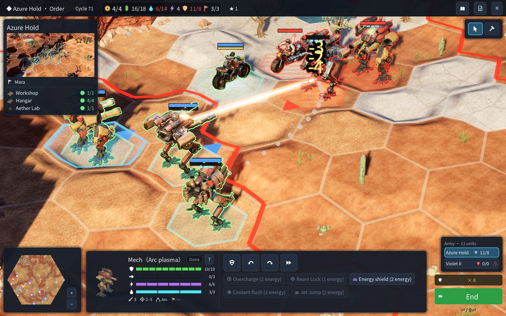
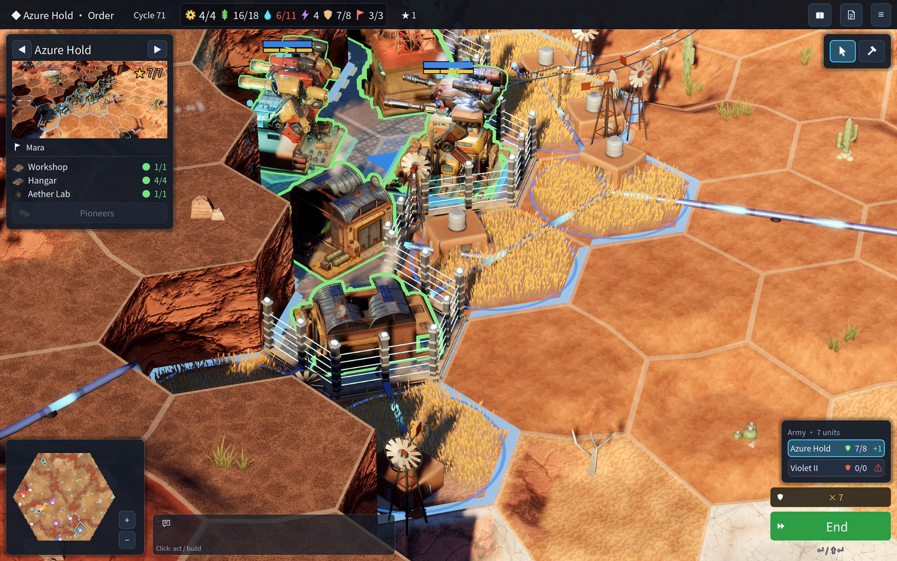
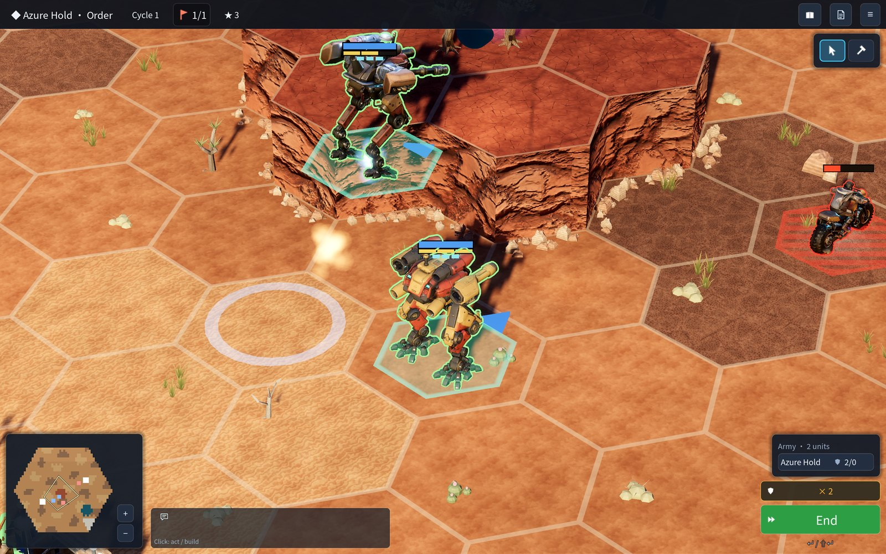
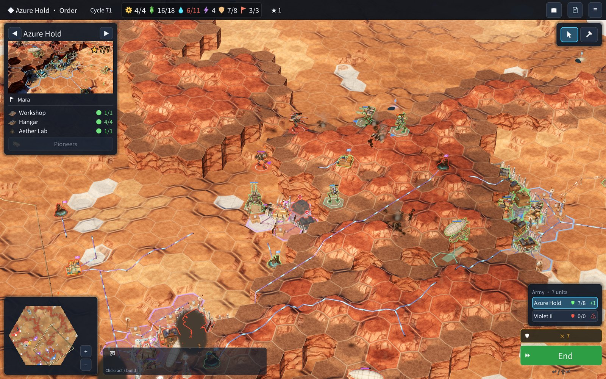
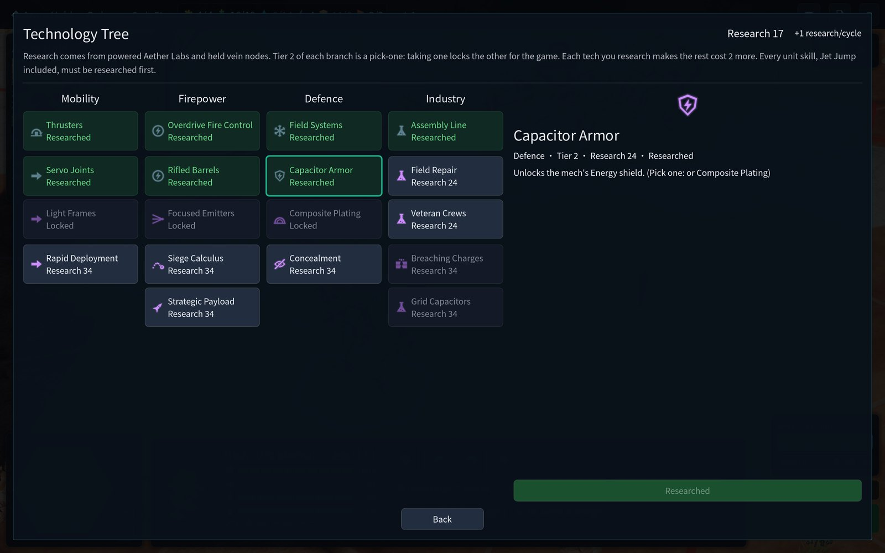
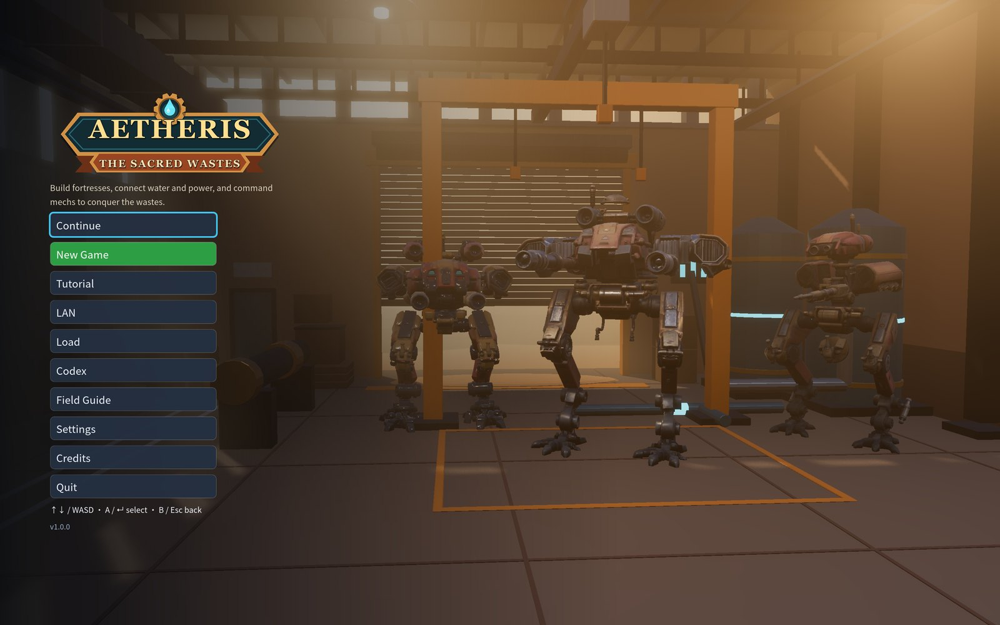

Water.
Power.
Steel.
Found a fortress in the desert. Pipe water to it, wire up power, and command a small army of mechs hex by hex — where every step, every turn of a turret and every cliff counts.

Every army starts with a pipe
An oasis lives on what you connect to it. Pump a spring and lay the pipe home; water the farms that carry your buildings and your troops; put a generator on a geothermal vent and string the wire over the hills. Mechs cool from your water network and charge their skills from your grid — so a raider who cuts a pipe can stop an army without firing at it.

Water
Pumps and pipes
Springs, deep aquifers, lake shores and the rare ancient vein nodes. Pipes follow the ground and show it: running water when wet, rust when cut.
Power
Generators and wires
Vents and ancient cores feed the grid. Tesla towers outside your walls draw first and zap anything that comes close.
Capacity
Farms carry the town
Every building and every unit takes room a watered farm provides. A town builds one unit at a time; hangars decide how many you can field.
Small armies. Precise moves.
Aetheris is not about the biggest stack. A handful of units, each one placed with care: mechs fire only where they face, a hit from behind does double damage, high ground lets the big guns reach farther, and a mech that strays from the water overheats. Jet-jump up a cliff the enemy thought was a wall, or slip a rider behind the lines.


- 8unit types
- 3cultures
- 14unit skills
- 4science branches
- 2roads to victory
Science is a choice, not a checklist
Research buys techs across four branches — Mobility, Firepower, Defence and Industry. Every skill, Jet Jump included, has to be researched first, and each branch's second tier makes you pick one of two for the whole game: an extra move for your mechs or for your riders, longer barrels or a beam lock, a shield or heavier plating. Each tech you own makes the next one dearer, so no two armies end up alike.

Two roads to victory
Conquest
Take every fortress
Breach the walls with siege spiders, hold the core, and capture each rival's towns until no one is left standing.
The vein
Hold the ancient nodes
Pump more of the ancient vein nodes than any rival and hold them through the countdown — while everyone else comes to bomb your pumps.
Learn it fast
A guided tutorial
A hand-made map walks you through it one step at a time: found, pipe, farm, power, fight, research, jump, and win by the vein.
Made for the Mac
